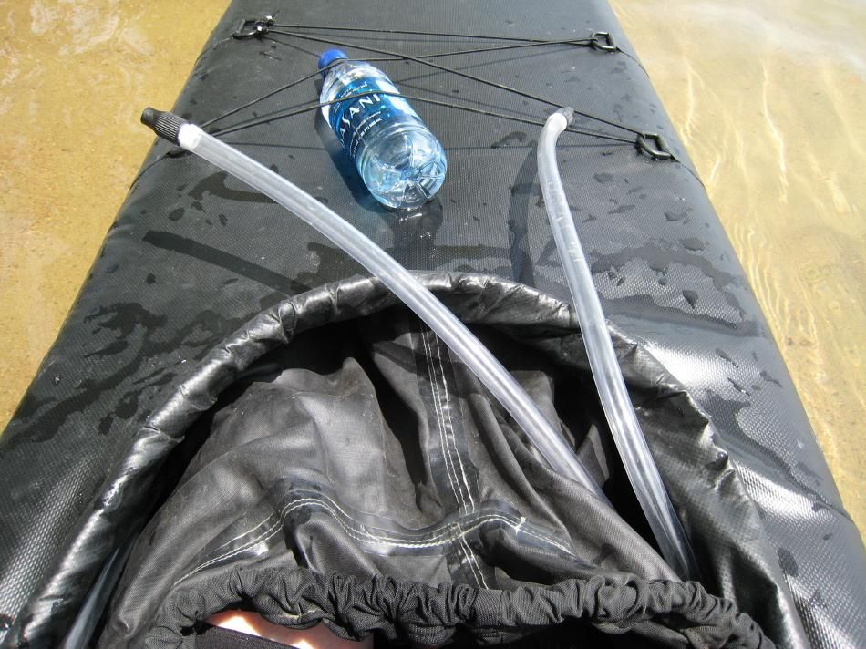

| Sonnet 16 | Menu Previous Page Next Page |
|

If it's necessary to gain access to the sponsons while on the water, simply pull the spray skirt and sea sock off of the coaming front edge. The sponsons are easily inflated while on the water as no pump is required.
|
|